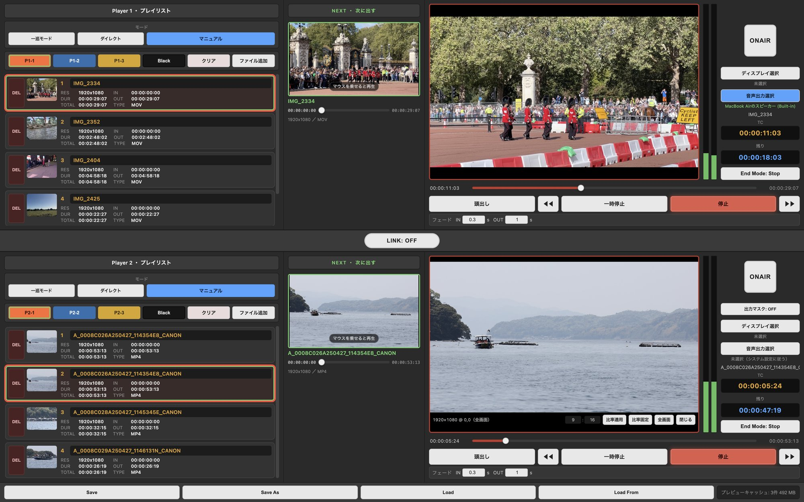

PonDashi Player Video Dual
映像・静止画・音声を 2 系統で送出する Mac 用のポン出しアプリです。Player 1 と Player 2 を同時に扱い、次に出すものを下見してから送出します。
配信準備中
Mac（Apple Silicon）

主な機能
画面の左から、プレイリスト・NEXT・オンエアモニター。上下に同じ構成のプレイヤーが 2 つ並びます。
- 選ぶ本番前・本番中
プレイリスト
プレイヤーごとに 3 つ。ドラッグで追加・並べ替え。「Black」で黒を出せます。
NEXT で下見
次に出すクリップを、送出中の映像・音声に影響させずに確認できます。
- 出す送出
3 つのモード
マニュアル（選んでから送出）、ダイレクト（クリックで即再生）、一巡（自動で次へ）。
フェード
IN・OUT を 0〜5 秒で。映像と音声が一緒にフェードします。
- つなぐ出力
出力先
外部ディスプレイや SDI 出力デバイスへ。音声の出力先もプレイヤーごとに選べます。
出力マスク
縦長スクリーンなど、会場ごとの画角に合わせて表示範囲を切り出せます（Player 2）。
扱えるファイル
| 映像 | mp4、mov、mxf、mts、m2ts など |
|---|---|
| 静止画 | jpg、png、tiff など（送出する秒数を指定） |
| 音声のみ | wav、aiff、mp3、m4a など（映像は黒のまま音声だけ送出） |